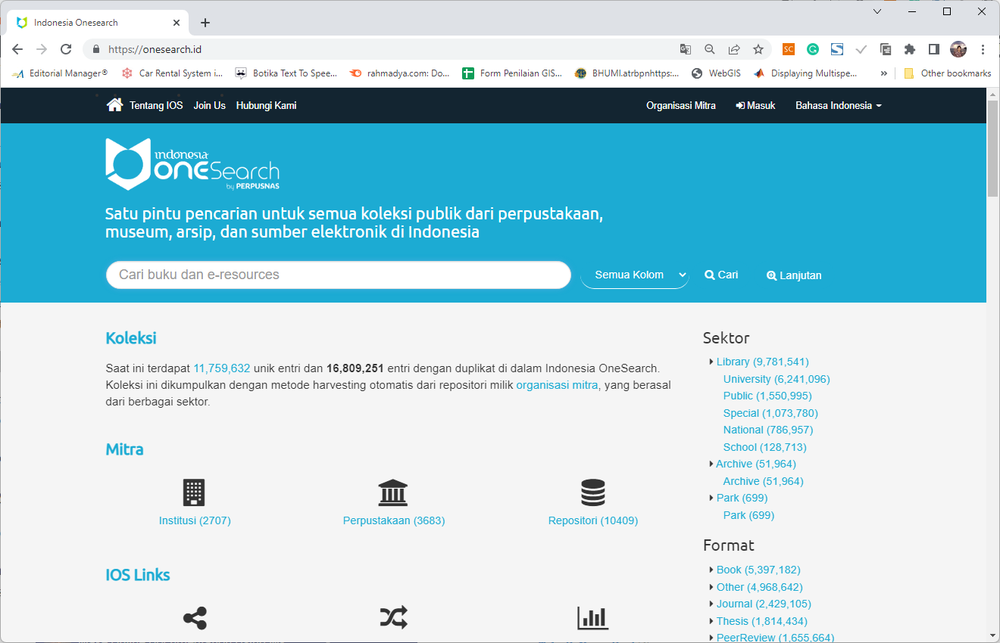

INDONESIA ONE SEARCH
Satu pintu pencarian untuk semua koleksi publik dari perpustakaan, museum, arsip, dan sumber elektronik di Indonesia
Overview

Indonesia OneSearch atau IOS adalah sebuah pintu pencarian tunggal untuk semua koleksi publik dari perpustakaan, museum, dan arsip di seluruh Indonesia. Selain itu, portal ini juga menyediakan akses ke sumber elektronik internasional (e-resources) yang dilanggan oleh Perpusnas RI untuk semua anggota yang terdaftar. Untuk bergabung dengan IOS, setiap repositori harus menyediakan API berbasis OAI-PMH (Open Archive Initiatives), sebuah protokol pengambilan metadata yang sudah digunakan oleh 75% lebih repositori di dunia.
Fitur Aplikasi
Fitur aplikasi Indonesia One Search (IOS) antara lain sebagai berikut:
1) User Module, berisi pendaftaran, login, dan recovery.
2) Modul Institusi, yang berisi:
- Menambah dan mengatur institusi
- Menambah dan mengatur library
- Menyediakan fasilitas Widget (link informasi suatu library sudah terindeks di OneSearch)
3) Repository Module, berisi fasilitas IOS terdiri dari
- Mendaftarkan dan Manajemen Repository
- Monitoring Repository
- Repository Crawling, Indexing, & Deletion
- Setting Widget
4) Consortioum Site Module, berisi pencarian collection pada grup konsorsium dalam bentuk dashboard